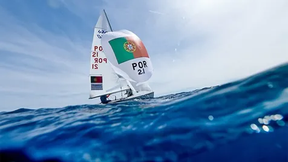

26SET
Circuito de Águas Interiores
Montargil
↗
O ponto de encontro da vela portuguesa — da primeira experiência no mar ao alto rendimento.
Costa Nova · Optimist · Laser Pico Individual
Ver evento oficial ↗Atletas, Equipas FPV, preparação olímpica e critérios de seleção. Uma área para acompanhar quem representa a vela portuguesa no mais alto nível.

A vela deve ser fácil de descobrir. Criámos percursos claros para crianças, adultos e famílias.
Uma área dedicada a treinadores, árbitros, oficiais e agentes desportivos, com cursos, certificações e calendário num único lugar.
Encontra clubes, escolas de vela e estruturas de formação por região.
Encontrar um clube ↗